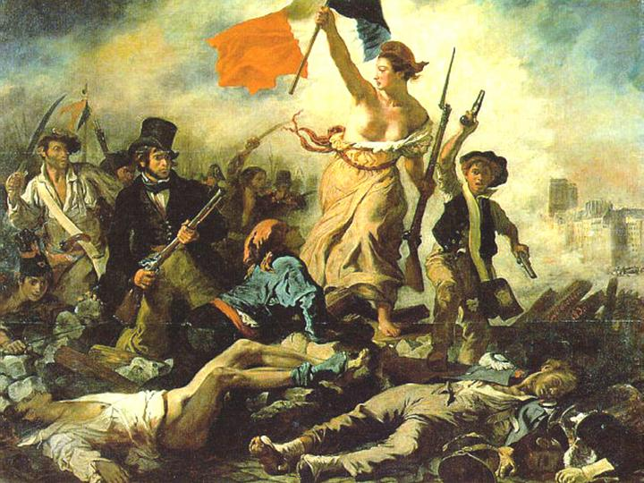

Famoso por elaborar a teoria da separação dos poderes, que hoje é adotada por quase todas as constituições do mundo, Charles-Louis de Secondat, mais conhecido por Montesquieu, devido ao seu título de nobreza, barão de La Brède e de Montesquieu, foi um filósofo politico francês de formação iluminista e importante crítico da monarquia absolutista, bem como do clero católico.
Sua obra mais importante foi o tratado político O Espírito das Leis, de 1748. Nesta obra Montesquieu defende um sistema de governo constitucional, a separação dos poderes, que se concentrava totalmente nas mãos do rei, a preservação das liberdades civis, manutenção da lei e o fim da escravidão. Apresentou ainda a ideia de que as instituições políticas representam aspectos geográficos e sociais de cada comunidade, um conceito inovador para a época.
Em sua teoria constitucional, Montesquieu definiu três principais formas de governo: republicano, monárquico e despótico. Governos republicanos poderiam variar de acordo com a extensão dos direitos de seus cidadãos, sendo dois os tipos mais característicos, as republicas democráticas, nas quais cidadania é mais ampla, e as republicas aristocráticas, nas quais a cidadania é restringida em algum medida. Em diferentes épocas, regiões e estruturas sociais, as republicas variam entre estes dois polos. Os regimes monárquicos por outro lado são, como o nome estabelece, regidas por um monarca. Se existe um conjunto de leis que restringe a autoridade do governante, o regime é considerado uma monarquia. Se não existe um conjunto de leis restringindo a autoridade do governante, o regime é considerado despótico.
Por trás de cada sistema político existe um princípio que direciona o comportamento dos indivíduos que vivem sob aquele regime. Estes princípios podem nos auxiliar a entender sob qual regime uma sociedade vive. Para os regimes despóticos, o princípio é o medo do governante, na ausência deste um regime despótico não perdurará, pois sem medo os indivíduos se levantarão contra o governante. No caso das monarquias o amor pela honra é o princípio que dirige o comportamento da sociedade. E no caso das republicas democráticas este princípio é o amor à virtude. Uma sociedade na qual não exista amor à virtude nunca será capaz de estabelecer uma republica democrática, da mesma forma que um regime monárquico não persistirá se não houver amor à honra.
Montesquieu rejeitou a ideia de liberdade como auto-governo coletivo. Rejeitou também a ideia de que liberdade significaria ausência de restrições. Para o autor, estas duas posições são hostis à liberdade política. Ainda, a liberdade seria possível, embora não garantida, apenas em sistemas monárquicos e repúblicas, nunca em sistemas despóticos.
Defendeu ainda que o clima tem influência na formação do espirito de um povo, sua forma de agir e pensar acerca da sociedade e suas instituições. Este espírito tornaria algumas sociedades mais propensas a um modelo de governo do que a outros. Autores modernos como Phillip Parker e Louis Althusser chamaram atenção para a influência do clima na economia e hábitos de um povo, o que influencia em grande medida a estrutura de uma sociedade e suas instituições.
O modelo de liberdade política apresentada por Montesquieu, dependeria de dois elementos:
Mesmo em uma república, se não há separação de poderes, a liberdade não pode ser garantida, pois a separação de poderes em diferentes esferas independentes permite que um poder restrinja tentativas de outros poderes de infringir a liberdade dos indivíduos.
Liberdade de pensamento, expressão e associação, além da eliminação da escravidão, seriam os elementos fundamentais deste conjunto. Montesquieu incluía ainda, o direito a um julgamento justo, a presunção da inocência e a proporcionalidade na severidade das penas.
